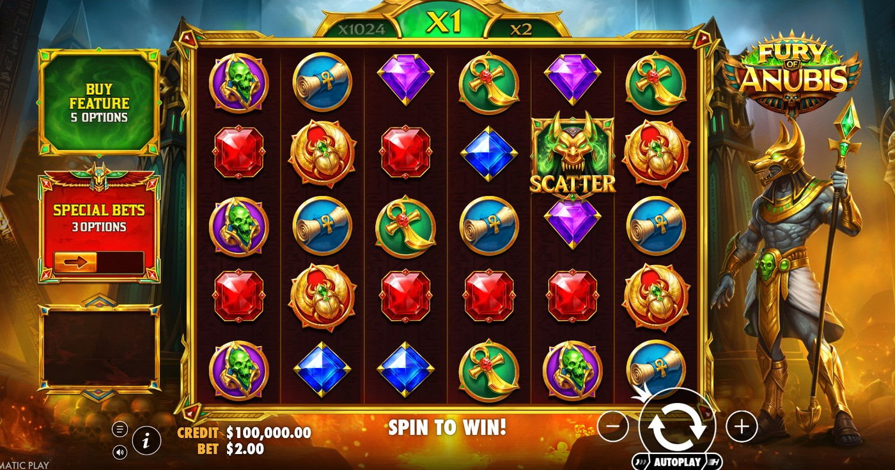

Two of Pragmatic Play's most popular scatter-pay slots — but visually and mechanically they couldn't be more different. Fury of Anubis is dark, atmospheric, and rewards patient tumble chains. Sweet Bonanza 1000 is colourful, explosive, and built around multiplier bombs that can hit in any single spin. Here's how they stack up.

Stats Comparison
Hit Frequency — Not a Reliable Public Comparison
The current public Fury of Anubis page does not state an exact hit frequency, so third-party one-in-N figures should not decide this comparison. Test both games with virtual credits and focus on the published mechanics rather than assuming a predictable session pattern.
Volatility — The Core Difference
Both games can create large short-term swings. Without a provider-published Fury of Anubis volatility score or hit rate, it is not responsible to promise that one is more bankroll-friendly. Set the same fixed virtual balance in each demo if you want to compare how their mechanics feel.
Multiplier Mechanics — Two Different Philosophies
Fury of Anubis uses a doubling tumble multiplier. Every consecutive tumble doubles the active multiplier from its starting value. In free spins, every spin starts at ×8–×64 and doubles from there. The mechanic rewards tumble chains.
Sweet Bonanza 1000 uses multiplier bomb symbols that land on the grid during free spins with values up to ×1,000. These are added together and applied to the total win. One spin can produce an enormous payout if multiple high-value bombs land simultaneously — it's a different kind of explosive potential.
Max Win — Sweet Bonanza 1000 Wins
Fury of Anubis has a provider-published 10,000× ceiling. Verify Sweet Bonanza 1000’s current ceiling on its official page before comparing, and avoid third-party one-in-N maximum-win probabilities unless the provider publishes them.
Theme & Experience
This comes down entirely to preference. Fury of Anubis is dark, tense, and atmospheric — every spin feels weighted with consequence. Sweet Bonanza 1000 is bright, fast, and joyful — it's designed to feel fun even when you're not hitting big. Neither is objectively better. They're built for different moods.